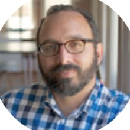
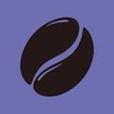
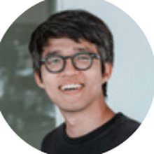
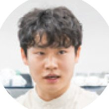
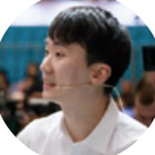
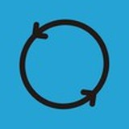
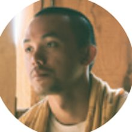

Open the guide
Open the guide
15th
The 15th World Coffee Forum
WHY WE
DRINK
COFFEE?
- Period
- Nov. 11 (Wed) – 14 (Sat), 2026, 4 days
- Venue
- Conference Rooms 3F & 4F, Coex, Seoul
- Theme
- WHY WE DRINK COFFEE?
- Organization
- World Coffee Forum Organizing Committee
Programs

Schedule at a Glance
Everything, day by day
- SCA Education3F · Conference Room 317
- The Stage4F · Conference Room 401
- The Sessions3F · Conference Room 301
- Origin Discovery3F · Conference Room 300
- Pairing Table4F · Conference Room 401 Lobby
- Asia-Pacific's 100 Best Coffee Shops GALA4F · Conference Room 401

The Stage
Nov. 12 (Thu)
4F · Conference Room 401- Taste & Master

Peter GiulianoSenior Advisor, SCAWhy Do We Drink Coffee Anyway? The 500 Year History of Coffee Passion
- Routine & Ritual
 Hee-kyung Lucia ChoCEO, Hwayo
Hee-kyung Lucia ChoCEO, HwayoThe Time in a Cup — How a Daily Cup Becomes a Ritual, and Carries On to the Next Generation
- Lunch
- Space & Experience
 Teo YangCreative Director, Teo Yang Studio
Teo YangCreative Director, Teo Yang StudioRediscovering Tradition and Locality: Spatial Experiences Crafted Through Coffee and Tea
- Space & Experience
 Kyurim KimBrand Director, newmix
Kyurim KimBrand Director, newmixK-Mix Coffee: Becoming the Impression of Korea
- Pairing Table & Coffee Break
The Pairing Table is a special mid-session program at The Stage where flavor and connection seamlessly blend. Over a cup of coffee and a dessert, take a relaxing break to discover fresh inspiration and expand your network.
Conference Room 401 Lobby - Connection & NetworkingChihoon AnCEO, unspecialty
How a YouTube Channel Grew into a Coffee Platform of Belonging
- Fireside Chat
- Award of Speaker Appreciation Plaques and Cafe Show Excellence Awards
- Asia-Pacific's 100 Best Coffee Shops GALA →

Origin Discovery
Nov. 11 (Wed) – 12 (Thu)
3F · Conference Room 30011.11 Wed
- Coffee Board of India
- Finca El Injerto
- Guatemalan Coffees
11.12 Thu
- IWCA
- Café de Honduras
- Coffee Board of India
The Sessions
Nov. 11 (Wed) – 14 (Sat)
3F · Conference Room 30111.11 Wed
Modulating Fermentation in Coffee Processing
Hoseok Song, General ManagerCompass CoffeePractical Brewing Standards: Mastering Extraction Variables
Mikyoung Cha, CEOKunes Brewing Spot
11.12 Thu
An Engineering Approach to Roasting Delicious Coffee
 Junseon Lee, CEOFaabs Coffee
Junseon Lee, CEOFaabs CoffeeDoduk & Kyubum: Why We Do Things Our Way

 Kyubum Lee, Roaster · Sunin Hong, BaristaDoduk & Kyubum
Kyubum Lee, Roaster · Sunin Hong, BaristaDoduk & KyubumAny Coffee, A Great Espresso
Hyuksoo Kwon, Department ManagerTosung Village
11.13 Fri
The Personal Era of Coffee, and the Technology Behind It
 Gilad Bechor, CEOCoffi
Gilad Bechor, CEOCoffiGreat Coffee Is No Accident: Why Data Is the Missing Ingredient
 Vasilis Apostolopoulos, CEOBibe Coffee
Vasilis Apostolopoulos, CEOBibe CoffeeDesigning Coffee Bar Layout and Workflow

Uiseong Kim, Head of B2B ConsultingBean Brothers2027 Coffee Trends: A Preview

Jungee Hong, General ManagerMonthly Coffee
11.14 Sat
The Evolving Role of the Barista in a Changing World

Junghwan Lim, Co-founderAery CoffeeBuying Back Time
Chanho Hong, PMRoasteryFlow

SCA Education
Nov. 12 (Thu) – 14 (Sat)
3F · Conference Room 31711.12 Thu One Day Coffee Explorer
Mission 1. Discover the Flavor
Suin Park & Dongjun Oh
Mission 2. Define your Taste
Tardis Kim & Kevin Lee
Mission 3. Craft your Cup
Kyungtae Kim & Jungmin Heo
11.13 Fri All about Q
All about Q : From Understanding To Application
Peter Giuliano, Lulu Wei
11.14 Sat Intro to Cupping
Intro to Cupping
Lulu Wei, Kyungyoon Lee
Coffee Futures Challenge
Nov. 13 (Fri) 13:00–17:00
3F · Conference Room 300Coffee Futures Challenge is an idea competition that explores the future of the coffee industry and its emerging possibilities. Through creative ideas proposed by the next generation across diverse fields, including business, services, culture, and technology, the program examines evolving industry trends and explores opportunities for sustainable growth and innovation.

Champion Live
Nov. 14 (Sat)
3F · Conference Room 318


Asia-Pacific's 100 Best Coffee Shops GALA
Nov. 12 (Thu) 17:00–18:30
4F · Conference Room 401Which are the 100 most exceptional coffee shops in Asia-Pacific? The list will be unveiled for the first time worldwide at Cafe Show Seoul 2026.

Venue · Contact
Venue
Conference Rooms 3F & 4F, Coex, Seoul
- 3FRooms 300 · 301 · 317 · 318
- 4FRoom 401 · 401 Lobby
Contact
Official Supporters

Sponsors

* The details of each program may be subject to change.